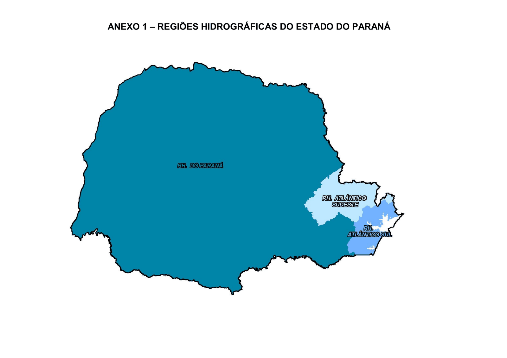
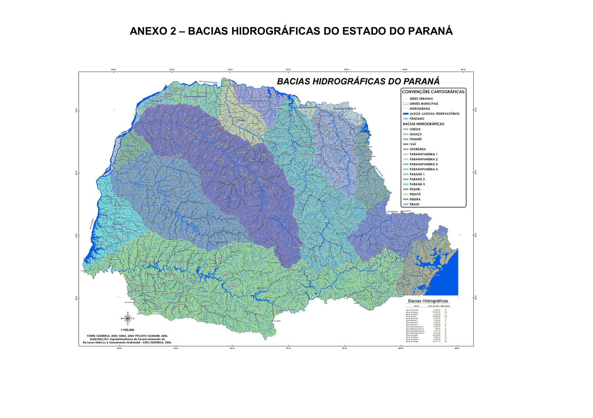
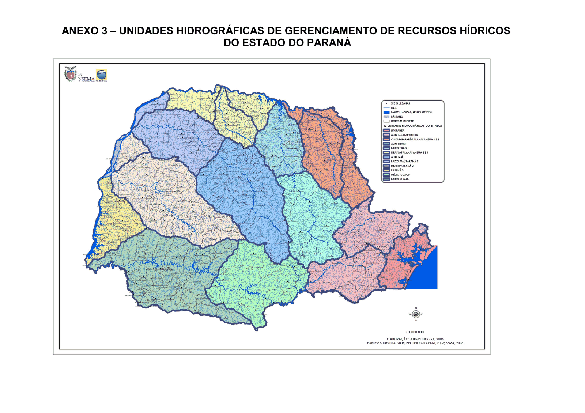

Resolução CERH/PR nº 49, de 20 de dezembro de 2006
Ementa: Dispõe sobre a instituição de Regiões Hidrográficas, Bacias Hidrográficas e Unidades Hidrográficas de Gerenciamento de Recursos Hídricos do Estado do Paraná
Preâmbulo
O CONSELHO ESTADUAL DE RECURSOS HÍDRICOS – CERH/PR, no uso das competências que lhe são conferidas pelo Art. 38, inciso I e XII da Lei Estadual nº 12.726, de 26 de novembro de 1999 e pelo disposto no Art. 1º do Decreto Estadual nº 2.314 de 17 de julho de 2000, e
Considerando a necessidade de se estabelecer uma base organizacional que contemple unidades hidrográficas de gerenciamento de recursos hídricos para a implementação da Política Estadual de Recursos Hídricos e do Sistema Estadual de Gerenciamento de Recursos Hídricos;
Considerando a necessidade de facilitar a implementação de base de dados referenciada por bacia, no âmbito estadual e, visando a integração das informações em recursos hídricos e gestão ambiental;
Considerando que a área de implementação da Política Estadual de Recursos Hídricos é a bacia hidrográfica em sua totalidade, conjunto de bacias hidrográficas ou porções de uma determinada bacia hidrográfica;
Considerando as regiões hidrográficas brasileiras estabelecidas mediante a Resolução 032 de 15 de outubro de 2003 do Conselho Nacional de Recursos Hídricos; e
Considerando as avaliações efetuadas pela Câmara Técnica instituída pela Resolução Nº 43 CERH/PR de 03 de novembro de 2005 para estabelecer proposta da área de atuação dos Comitês de Bacia Hidrográfica, utilizando como base os estudos preliminares do Plano Estadual de Recursos Hídricos,
resolve:
Art. 1º
Adotar para o Estado do Paraná a divisão em regiões hidrográficas brasileiras estabelecida na Resolução nº 32, de 15 de outubro de 2003, do Conselho Nacional de Recursos Hídricos com a finalidade de promover a articulação do planejamento de recursos hídricos do Estado com o planejamento nacional.
§ 1º
O Estado fica dividido em três Regiões Hidrográficas (anexo 1):
item 1
REGIÃO HIDROGRÁFICA DO ATLÂNTICO SUL. Compreende a totalidade do conjunto das bacias hidrográficas da Bacia Litorânea, que drena para o oceano atlântico.
item 2
REGIÃO HIDROGRÁFICA DO ATLÂNTICO SUDESTE. Compreende a Bacia do Rio Ribeira em território paranaense.
item 3
REGIÃO HIDROGRÁFICA DO PARANÁ - Compreende as bacias do Rio Itararé e do Rio Iguaçu em território paranaense, as bacias dos Rios Cinzas, Tibagi, Pirapó, Ivaí, Piquiri, os afluentes em território paranaense do Rio Paranapanema que conformam as Bacias de referencia Paranapanema 1, 2, 3 e 4, e do Rio Paraná que conformam as Bacias de referencia Paraná 1, 2 e 3.
§ 2º
As regiões hidrográficas compreendem a área total ou parcial das 16 bacias hidrográficas paranaenses listadas abaixo e ilustradas no mapa (anexo 2):
Bacia do Rio das Cinzas, Bacia do Rio Iguaçu, Bacia do Rio Itararé, Bacia do Rio Ivaí, Bacia Litorânea, Bacia do Paraná 1, Bacia do Paraná 2, Bacia do Paraná 3, Bacia do Paranapanema 1, Bacia do Paranapanema 2, Bacia do Paranapanema 3, Bacia do Paranapanema 4, Bacia do Rio Piquiri, Bacia do Rio Pirapó, Bacia do Rio Ribeira e Bacia do Rio Tibagi.
Art. 2º
Para efeito de gerenciamento dos recursos hídricos e conformação dos comitês de bacias hidrográficas, serão adotadas uma ou mais Unidades Hidrográficas, conforme relacionadas abaixo e ilustradas no anexo 3.
item 1
UNIDADE HIDROGRÁFICA LITORÂNEA Compreende a totalidade da Bacia Litorânea
item 2
UNIDADE HIDROGRÁFICA DO ALTO IGUAÇU, AFLUENTES DO RIO NEGRO E AFLUENTES DO RIO RIBEIRA. Compreende toda a Bacia do Ribeira em território paranaense e a Bacia do Rio Iguaçu até imediatamente à jusante da confluência com o Rio Negro, no município de São Mateus do Sul.
item 3
UNIDADE HIDROGRÁFICA DO ITARARÉ, DO CINZAS, DO PARANAPANEMA 1 E DO PARANAPANEMA 2 Compreende a totalidade das Bacias do Cinzas, Itararé em território parananense, Paranapanema 1 e Paranapanema 2
item 4
UNIDADE HIDROGRÁFICA DO ALTO TIBAGI Compreende a Bacia do Alto Tibagi das nascentes do Rio Tibagi até imediatamente a jusante da foz do Ribeirão das Antas, no Município de Curiúva.
item 5
UNIDADE HIDROGRÁFICA DO BAIXO TIBAGI Compreende a Bacia do Baixo Tibagi, à jusante da foz do Ribeirão das Antas no Município de Curiúva.
item 6
UNIDADE HIDROGRÁFICA DO PIRAPÓ, DO PARANAPANEMA 3 E DO PARANAPANEMA 4 Compreende a totalidade das Bacias do Pirapó, Paranapanema 3 e Paranapanema 4
item 7
UNIDADE HIDROGRÁFICA DO ALTO IVAÍ Compreende a Bacia do Alto Ivaí desde as nascentes do Rio Ivaí até imediatamente à jusante da foz do Ribeirão Marialva, município de Floresta.
item 8
UNIDADE HIDROGRÁFICA DO BAIXO IVAÍ E DO PARANÁ 1 Compreende a Bacia do Baixo Ivaí à jusante da foz do Ribeirão Marialva, Município de Floresta e a totalidade da Bacia do Paraná 1.
item 9
UNIDADE HIDROGRÁFICA DA BACIA DO PIQUIRI E DO PARANÁ 2 Compreende a totalidade das Bacias Hidrográficas do Rio Piquiri e do Paraná 2
item 10
UNIDADE HIDROGRÁFICA DO PARANÁ 3 Compreende a totalidade da Bacia do Paraná 3
item 11
UNIDADE HIDROGRÁFICA DOS AFLUENTES DO MÉDIO IGUAÇU Compreende a Bacia do Rio Iguaçu no trecho à jusante da confluência do Rio Iguaçu e Rio Negro, no município de São Mateus do Sul, até imediatamente à jusante da foz do Rio Jordão, no município de Foz do Jordão.
item 12
UNIDADE HIDROGRÁFICA DOS AFLUENTES DO BAIXO IGUAÇU Compreende a Bacia do Rio Iguaçu no trecho à jusante da foz do Rio Jordão, até a sua foz no Rio Paraná.
Parágrafo único
Define-se Unidade Hidrográfica para fins desta Resolução a área cuja abrangência pode ser a bacia hidrográfica na sua totalidade, conjunto de bacias hidrográficas ou parte de bacias hidrográficas.
parágrafo único (segundo)
Qualquer alteração nas Unidades Hidrográficas estabelecidas nesta Resolução dependerá de prévia aprovação do Conselho Estadual de Recursos Hídricos.
Art. 3º
O Comitê das Bacias do Alto Iguaçu e Afluentes do Alto Ribeira, instituído pelo Decreto nº 5.878 de 13 de dezembro de 2005, deverá se adequar à área de abrangência prevista para a Unidade Hidrográfica 2 num prazo de até quatro anos.
Art. 4º
O Comitê da Bacia do Rio Jordão, instituído pelo Decreto nº 5.791 de 13 de junho de 2002, deverá se adequar à área de abrangência prevista para a Unidade Hidrográfica 11 num prazo de até quatro anos.
Art. 5º
As solicitações de instalação de Mesas Diretoras Provisórias e de Comitês de Bacia Hidrográfica sem Decreto de instituição, encaminhadas ao Conselho Estadual de Recursos Hídricos, devem ser adequadas de acordo com as Unidades Hidrográficas propostas.
Art. 6º
Nas Unidades Hidrográficas do Itararé, do Cinzas, do Paranapanema 1 e do Paranapanema 2; do Alto Tibagi; do Baixo Tibagi e do Pirapó, do Paranapanema 3 e do Paranapanema 4, deverão ser implementadas ações conjuntas com a Agência Nacional de Águas – ANA e com as instituições estaduais de gerenciamento dos recursos hídricos do Estado de São Paulo, com o objetivo promover a gestão compartilhada da bacia do Paranapanema.
Art. 7º
Nas Unidades Hidrográficas do Alto Iguaçu, Afluentes do Rio Negro e Afluentes do Rio Ribeira; do Médio Iguaçu e do Baixo Iguaçu deverão ser implementadas ações conjuntas com a Agência Nacional de Águas – ANA e com as instituições estaduais de gerenciamento dos recursos hídricos do Estado de Santa Catarina, com o objetivo promover a gestão compartilhada da bacia do Iguaçu.
Art. 8º
Esta Resolução entrará em vigor na data da sua publicação, revogadas todas as disposições em contrário.
Fecho
Curitiba, 20 de dezembro de 2006.
Assinaturas
Lindsley da Silva Rasca Rodrigues – Secretário de Estado do Meio Ambiente e Recursos Hídricos; Presidente do Conselho Estadual de Recursos Hídricos
ANEXOS
Os três anexos são mapas (tipo 3, conteúdo normativo ilustrado). Cada um traz a figura, a legenda transcrita e, no Anexo 2, o quadro de bacias.
ANEXO 1 – REGIÕES HIDROGRÁFICAS DO ESTADO DO PARANÁ
(Citado em: Art. 1º, § 1º.)
Figura 1
Mapa das Regiões Hidrográficas do Estado do Paraná

Rótulos do mapa: RH. DO PARANÁ; RH. ATLÂNTICO SUDESTE; RH. ATLÂNTICO SUL (descrição do conversor).
ANEXO 2 – BACIAS HIDROGRÁFICAS DO ESTADO DO PARANÁ
(Citado em: Art. 1º, § 2º.)
Figura 1
Mapa Bacias Hidrográficas do Paraná, escala 1:950.000

Convenções cartográficas: SEDES URBANAS
Convenções cartográficas: LIMITES MUNICIPAIS
Convenções cartográficas: HIDROGRAFIA
Convenções cartográficas: LAGOS; LAGOAS; RESERVATÓRIOS
Convenções cartográficas: PÂNTANO
Convenções cartográficas, Bacias hidrográficas: CINZAS
Convenções cartográficas, Bacias hidrográficas: IGUAÇU
Convenções cartográficas, Bacias hidrográficas: ITARARÉ
Convenções cartográficas, Bacias hidrográficas: IVAÍ
Convenções cartográficas, Bacias hidrográficas: LITORÂNEA
Convenções cartográficas, Bacias hidrográficas: PARANAPANEMA 1
Convenções cartográficas, Bacias hidrográficas: PARANAPANEMA 2
Convenções cartográficas, Bacias hidrográficas: PARANAPANEMA 3
Convenções cartográficas, Bacias hidrográficas: PARANAPANEMA 4
Convenções cartográficas, Bacias hidrográficas: PARANÁ 1
Convenções cartográficas, Bacias hidrográficas: PARANÁ 2
Convenções cartográficas, Bacias hidrográficas: PARANÁ 3
Convenções cartográficas, Bacias hidrográficas: PIQUIRI
Convenções cartográficas, Bacias hidrográficas: PIRAPÓ
Convenções cartográficas, Bacias hidrográficas: RIBEIRA
Convenções cartográficas, Bacias hidrográficas: TIBAGI
Fonte: SUDERHSA, 2000; SEMA, 2004; PROJETO GUARANI, 2006. Elaboração: Superintendência de Desenvolvimento de Recursos Hídricos e Saneamento Ambiental - ATIG/SUDERHSA, 2006.
Tabela 1 – Bacias Hidrográficas
| Nome | Área em Km2 | Municípios |
|---|---|---|
| Bacia do Cinzas | 9.738,40 | 34 |
| Bacia do Iguaçu | 55.506,25 | 114 |
| Bacia do Itararé | 5.230,18 | 11 |
| Bacia do Ivaí | 36.898,63 | 103 |
| Bacia Litorânea | 5.814,00 | 12 |
| Bacia Paraná I | 1.342,08 | 6 |
| Bacia Paraná II | 2.848,52 | 9 |
| Bacia Paraná III | 8.458,84 | 27 |
| Bacia Paranapanema I | 1.256,37 | 5 |
| Bacia Paranapanema II | 700,79 | 4 |
| Bacia Paranapanema III | 3.776,18 | 20 |
| Bacia Paranapanema IV | 4.183,54 | 17 |
| Bacia do Piquiri | 24.936,88 | 70 |
| Bacia do Pirapó | 5.066,83 | 33 |
| Bacia do Ribeira | 9.205,00 | 17 |
| Bacia do Tibagi | 24.917,72 | 49 |
ANEXO 3 – UNIDADES HIDROGRÁFICAS DE GERENCIAMENTO DE RECURSOS HÍDRICOS DO ESTADO DO PARANÁ
(Citado em: Art. 2º, caput.)
Figura 1
Mapa das Unidades Hidrográficas de Gerenciamento de Recursos Hídricos do Estado do Paraná, escala 1:1.000.000

Legenda: SEDES URBANAS
Legenda: RIOS
Legenda: LAGOS; LAGOAS; RESERVATÓRIOS
Legenda: PÂNTANO
Legenda: LIMITES MUNICIPAIS
Legenda, 12 unidades hidrográficas do Estado: LITORÂNEA
Legenda, 12 unidades hidrográficas do Estado: ALTO IGUAÇU/RIBEIRA
Legenda, 12 unidades hidrográficas do Estado: CINZAS/ITARARÉ/PARANAPANEMA 1 E 2
Legenda, 12 unidades hidrográficas do Estado: ALTO TIBAGI
Legenda, 12 unidades hidrográficas do Estado: BAIXO TIBAGI
Legenda, 12 unidades hidrográficas do Estado: PIRAPÓ/PARANAPANEMA 3 E 4
Legenda, 12 unidades hidrográficas do Estado: ALTO IVAÍ
Legenda, 12 unidades hidrográficas do Estado: BAIXO IVAÍ/PARANÁ 1
Legenda, 12 unidades hidrográficas do Estado: PIQUIRI/PARANÁ 2
Legenda, 12 unidades hidrográficas do Estado: PARANÁ 3
Legenda, 12 unidades hidrográficas do Estado: MÉDIO IGUAÇU
Legenda, 12 unidades hidrográficas do Estado: BAIXO IGUAÇU
Elaboração: ATIG/SUDERHSA, 2006. Fontes: SUDERHSA, 2006; PROJETO GUARANI, 2006; SEMA, 2003.
Relação com outras normas
Observação do conversor (não é texto normativo):
O art. 8º revoga "todas as disposições em contrário" sem indicar normas (possível revogação tácita, a conferir pelo usuário).
A Resolução CERH/PR nº 43/2005, o Decreto nº 5.878/2005, o Decreto nº 5.791/2002, o Decreto nº 2.314/2000 e a Resolução CNRH nº 32/2003 não estão na base.
Notas de transcrição
Fonte: PDF do corpo da resolução (3 páginas, timbre da SEMA/CERH) e três PDFs de anexos (mapas), enviados por Leo. O PDF não traz data nem edição da publicação no Diário Oficial.
Rótulos: o original imprime "Art. 1º." com ponto e "Parágrafo 1º."; os rótulos desta base seguem o padrão e não alteram o texto.
Art. 1º, § 1º: as três regiões hidrográficas vêm numeradas "1", "2", "3" e em título próprio; foram registradas como itens (art1_par1_ite1 a ite3), com o título e o texto na mesma linha.
Art. 1º, § 2º: a lista das 16 bacias vem em parágrafo solto, mantido como parágrafo de continuação, sem ID.
Art. 2º: o caput diz "conforme relacionadas abaixo", mas as 12 unidades hidrográficas vêm depois do parágrafo único; foram registradas como itens do caput (art2_cpt_ite1 a ite12), sem alterar a ordem. O original tem dois "Parágrafo único" no art. 2º (o segundo vem depois da lista): IDs art2_par1u e art2_par2u; o rótulo "(segundo)" é do conversor.
Art. 2º, itens: a unidade 3 traz "parananense" (sic) no original.
Art. 4º: o original imprime "Art.4º." sem espaço.
Anexos: o PDF de cada anexo é só um mapa; a imagem foi reduzida (1600 px de largura). A legenda e o quadro de bacias do Anexo 2 foram transcritos da imagem, e as linhas descrevem a legenda do mapa (descrição do conversor). Na legenda do Anexo 3 a unidade "Alto Iguaçu/Ribeira" aparece assim no mapa, enquanto o art. 2º a chama "Alto Iguaçu, Afluentes do Rio Negro e Afluentes do Rio Ribeira".
Anexo 2, quadro: os nomes das bacias seguem o mapa ("Bacia do Cinzas", "Bacia Paraná I"), diferentes das formas do art. 1º, § 2º ("Bacia do Rio das Cinzas", "Bacia do Paraná 1").